- To move slides, use the arrow keys or swipe on your mobile device
- To see the speaker notes, press "s"
- To go to full screen, press "f"
- To print as PDF, go to this URL: ?print-pdf, then print.
- To get a PDF with speaker notes, add ?print-pdf&showNotes=true to the URL.
Astrochemistry as a tool to study Star Formation in the Galaxy
- Postdocs: Miriam Garcia Santa Maria (2024-), Allison Towner (2020-2023)
- PhD: Desmond Jeff, Theo Richardson, Alyssa Bulatek, Nazar Budaiev, Savannah Gramze, Taehwa Yoo
- Postbac: Derod Deal, Aden Dawson
- Supported by NSF 2008101, 2206511, CAREER 2142300, STSCI 1905, 2221, 3523, 5365, 6151, Astropy
Collaborators:
John Bally, Ashley Barnes, Cara Battersby,
Roberto Galván-Madrid,
Jonathan Henshaw, J. M. Diederik
Kruijssen, Steven Longmore, Xing Lu, Fanyi Meng, Elisabeth A.C.
Mills, Juergen Ott, Justin Otter, Álvaro Sánchez-Monge,
Peter Schilke, Daniel Walker, Erik Rosolowsky, Eric Koch, Ciriaco
Goddi, Brett McGuire, Dick Plambeck, Melvyn Wright,
Johan van der Walt,
Henrik Beuther, Kei Tanaka, Yichen Zhang,
the ALMA-IMF team (Timea Csengeri, Fabien Louvet,
Nichol Cunningham, Frederique Motte, Patricio Sanhueza, Thomas
Nony, Yohan Pouteau, Melisse Bonfand, Fernando Olguin, Sylvain Bontemps, and
many others), and the ACES team
Slides available at
https://keflavich.github.io/talks/colloquium_Oct2024_UGA.html or from my webpage →talks
Star formation drives the evolution of the universe
Star Formation oversimplified
Ṁ
The star formation rate, i.e., how much gas turns to stars
L / M
The light per unit mass, i.e., how stars and stellar populations turn matter into light
High-mass stars produce photons & heavy elements
low-mass stars live practically forever
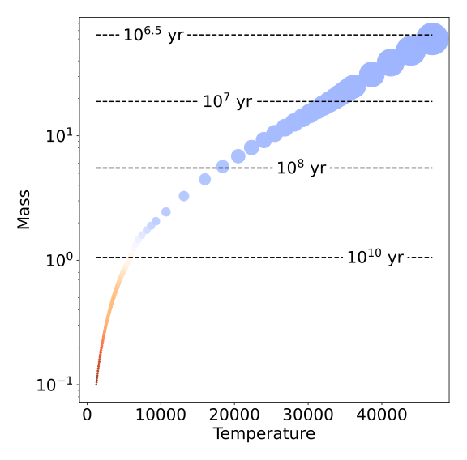

Point color shows effective temperature, point size shows luminosity (left) and mass (right)
The stellar initial mass function (IMF)
Stars are sampled from this distribution
(but it's not universal)
High-mass stars populate the stellar graveyard

Almost all of the light in star-forming galaxies is produced by high-mass stars
The stars form in and from gas (as traced by dust)
Most of what we know of star formation in detail comes from small local clouds
Most of what we know of star formation in detail comes from small local clouds
Cartoon of isolated low-mass star formation
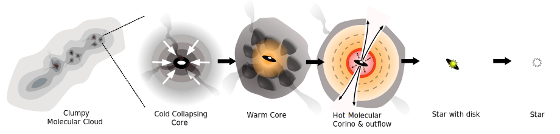A molecular cloud collapses and fragments


The core forms a central protostar

The protostar heats its parent core and forms a disk

It drives an outflow and consumes (or runs from or blows out) its core

Eventually, you end with just a star-disk system

Cartoon of isolated low-mass star formation
The isolated cartoon is wrong in several ways
Cores fragment.
Massive stars cook their neighbors in hot cores.
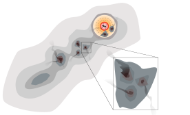
Most of what we know of star formation in detail comes from small local clouds
They contain only low-mass stars and do not represent star formation in general
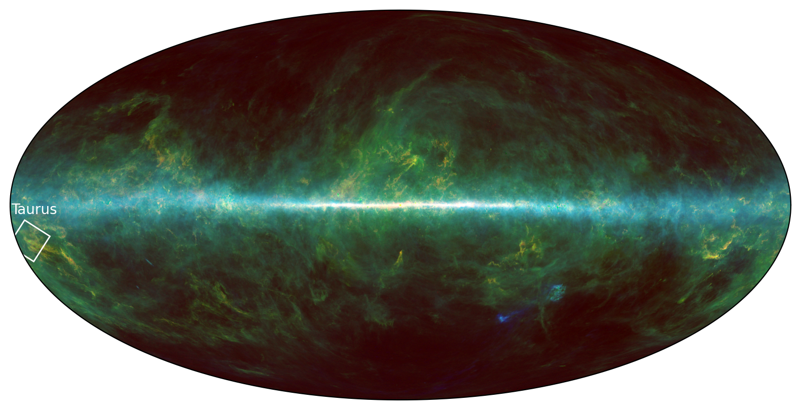

Most stars form in denser regions
NGC 3603 is a high-mass (104 M⊙) cluster
Lada & Lada 2003:
5-10% in bound clusters
in our Galaxy
5-10% in bound clusters
in our Galaxy
High-mass clusters have top-heavier IMFs
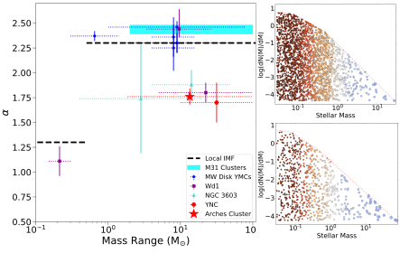


Proto-cluster regions in our Galaxy sample conditions that were commonplace in the early universe
Are top-heavy IMFs limited to clusters?
NGC 3603 & Westerlund 1


SSCs are common in starburst nuclei and drive galactic outflows
NGC 253 protoclusters (Leroy+2018)
NGC 4945 protoclusters (Emig+2020)
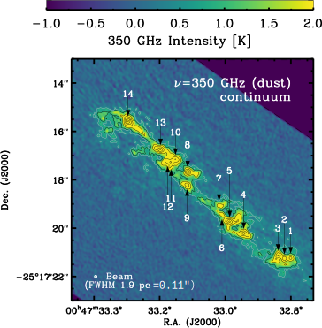


Star formation drives the evolution of the universe
Most stars in most galaxies formed long ago
Galaxies were smaller & denser back then

Big Questions in Star Formation
I'll highlight incremental progress toward answering some of these
spiced with a few intriguing discoveries
- How does the IMF vary, and what controls its variation?
- What controls the star formation rate in galaxies?
- When and how do planets form?
- How does stellar clustering affect each of these?
- What initiates star formation?
- What Processes Govern Protostellar Evolution and Determine the Stellar Mass and Rotation Rate?
- How do Massive Stars Form?
- What is Lifetime of Molecular Clouds (and the Duration of Star Formation)?
- What Physics Determines the Initial Mass Function?
- What Physics Regulates the Rate & Efficiency?
- What Role Does Environment Play in Star and Planet Formation?
- What Physics Regulates Star Formation in Clusters?
- How homogeneous are clusters?
- What is the role of feedback (outflow, radiation, wind, etc) in star formation?
- What is the role of disks in star and planet formation?
- How do multiple systems form?
Goal: Measure number of forming stars at each mass
to answer: How does the IMF form?
Tools: Light emission and absorption by dust and molecules
to answer: How does the IMF form?
Tools: Light emission and absorption by dust and molecules
Our Galaxy
Gaia star colors via ESA
Our Galaxy
2MASS via IPAC
Our Galaxy
Planck + HI4PI via lambda.gsfc.nasa.gov
Our Galaxy
Planck + HI4PI via lambda.gsfc.nasa.gov
Astrochemistry as a tool: what do molecules trace?
Astrochemistry as a tool: what do molecules trace?
Our Galaxy
HI: "Diffuse" gas
HI4PI
Astrochemistry as a tool: what do molecules trace?
Our Galaxy
CO: molecular gas
Planck
Astrochemistry as a tool: what do molecules trace?
Our Galaxy
Dust
Planck

Astronomers' view of Dust
- It blocks starlight (extinction)
- It emits in the far-infrared
- Made of refractory materials (true metals, not astronomer metals)
- It may come in flavors (carbonaceous, silicate)
- Sizes from a few atoms (PAHs & nanometer particles) to mm
- It only grows bigger in protoplanetary systems
- In cold clouds, dust grains collect ices
- In cold clouds, all of the refractory materials are in dust:
gas ∝ dust: we use dust to measure total mass
The Galactic Center
The Galactic Center
The Galactic Center
The Galactic Center
Is star formation different in other environments?
In the Galactic Center?
The CMZ
$\sim10^8$ M$_\odot$ of gas in $\sim200$ pc, 10% of Galactic star formation Dust, tracing gas
The Central Molecular Zone of the Galaxy represents one extreme of star forming conditions in the Galaxy

The CMZ: ACES
The first complete survey of the CMZ with 2.4" resolution (previous best was ~15")
between ~2 microns and 10 cm.
between ~2 microns and 10 cm.

Results forthcoming! Continuum, line data papers, catalogs, kinematic analyses, filament identifications all in prep....


Gas tracers of processes (classic vs reality)
- SiO: Shock Tracer [shocks destroy dust, release SiO]
- But, we see SiO everywhere!
- N2H+: Cold, Dense Gas tracer [CO destroys N2H+; when CO freezes, N2H+ abounds]
- N2H+ is too abundant in the Galactic Center
- CH3OH & COMs: dense, ice-processed, reheated gas
- These are widespread in the Galactic Center
- "Metal"-bearing molecules are refractory, stuck in dust
- but there are some in disks


despite a total mass ~105 M⊙ in <3 pc


F466N
F405N
F466N
F405N


Galactic Center gas: N2H+ coincides w/CO gas
(it shouldn't; gaseous CO should destroy N2H+)
N2H+ contours on CO 3-2
Santa-Maria+ 2021: higher CRIR

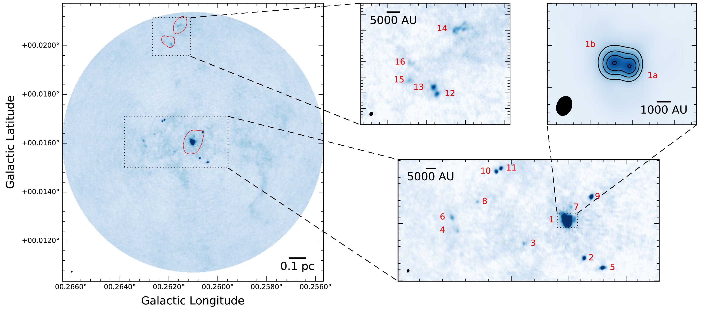
Walker+ 2021
 Alyssa Bulatek+
Alyssa Bulatek+ in prep
Alyssa Bulatek+ in prep


A methanol dasar shows dense gas
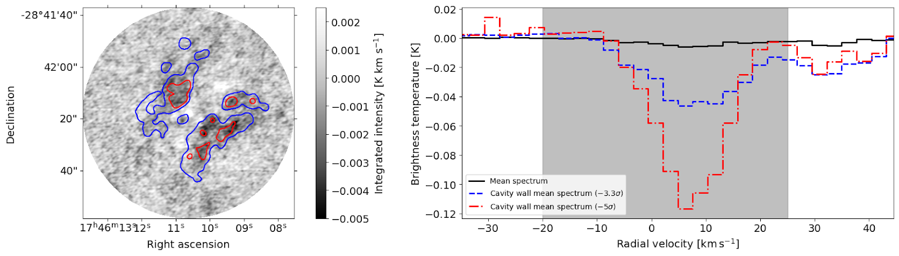
Alyssa Bulatek: Spectral Line Survey of The Brick
- Dasar line at 107 GHz
- CH3OH only in absorption
- Occurs at density $n<10^6 \mathrm{cm}^{-3}$

Gas-phase metals in disks
the gas & dust where stars form: Orion
Our Galaxy
the gas & dust where stars form
Gas-phase metals in disks
the gas & dust where stars form: Orion
the gas & dust where stars form: Orion
the gas & dust where stars form: Orion
The Integral-Shaped filament has $\sim10^4$ M$_\odot$ of gas over $\sim$10 pc Kong+ 2018 CARMA-Orion surveythe gas & dust where stars form: Orion
The Orion Molecular Cloud is the closest (d$\sim400$ pc) site of high-mass star formationthe gas & dust where stars form: Orion
BOOM!Clusters are sites of interactions & collisions
The BN/I/x interaction is the poster case of accretion ended by dynamical interaction.

...even though Orion is only a medium-mass proto-open-cluster
Orion Source I
a disk around a 15 M⊙ YSO
Salt: NaCl
Temperature?
Temperature?
A contrived model
Observing the Keplerian rotation profile of a disk is the most direct way to measure a protostar's mass
(we can only see the disk, not the star itself)

Why do we see salt?
- Before, NaCl & KCl only in AGB*:
associated with dust formation - Most likely dust destruction here:
- In the disk?
- As the outflow is launched?
Where do we see salt?
Only in a disk!Possible future uses for these lines?
- Metallicity measurement in deeply embedded star-forming environments? (at least of Na, K, Cl)
- Disk kinematics of high-mass stars, which are otherwise unobservable (τ>1 at mm wavelengths)
- Disk kinematic measurements at early stages?
- Probe dust destruction (and/or formation?) in outflows, disks?
- Probe radiation environment around HMYSOs?
We do not have a viable model to explain these temperatures
A strong non-blackbody radiation field from 25-40 µm may explain them.
Forsterite (MgSiO4) has some emission bands in that range. Maybe?
Salt is a tool to weigh HMYSOs
Keplerian orbits measure massBrine lines measure dynamical mass
NaCl v=1 J=18-17
Stack of v=[0,1] Ju=[18,17]
SrcI


15 M⊙
30 M⊙
40 M⊙

More Brinary disks
Ginsburg+ 2023: New sample. Miriam Garcia Santa-Maria is following up
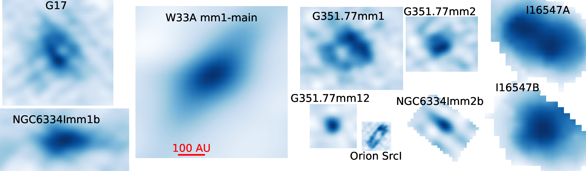

Briny chemistry:
Salts, SiS, SiO, and PN are seen together [but limited spectral coverage]

What have we learned about brinaries?
- Neither common nor rare: 10 known so far, >23 HMYSO candidates examined
- Y: SrcI, G17, IRAS16547, NGC6334I, G351.77, W33A
- Ginsburg+ 2019, Tanaka+ 2020, Ginsburg+ 2023
- N: I16523, I18089, G11, G5, NGC6334IN, S255IR NIRS3, G333.23-0.06, I18162
- Ginsburg+ 2023
- Y: SrcI, G17, IRAS16547, NGC6334I, G351.77, W33A
- Coincide w/line-poor sources
- Not hot cores; little mass reservoir?
- Trace reasonably symmetric disks (in the well-resolved cases)
Compare: G17 vs G11
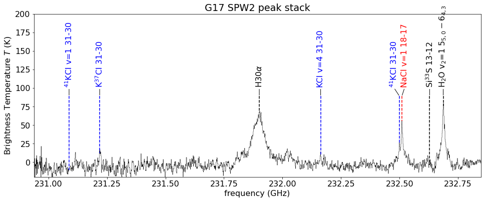G17: Brinary
Hot (ionizing) photosphere. Circular disk.

G11: Not-Brinary
Molecule rich, kinematically messy & extended
Deep VLA observations of low-J lines in Orion
We find hot cores here
The Inner Galaxy is where most stars form
We find hot cores here
The Inner Galaxy is where most stars form
ALMA-IMF: 15 high-mass star-forming regions
Orange layer shows ATLASGAL 870$\mu$m dust:the dense gas where stars form
ALMA-IMF: 15 high-mass star-forming regions
Orange layer shows ATLASGAL 870$\mu$m dust:the dense gas where stars form ALMA-IMF targets are among the most massive between 2-6 kpc from the sun
1mm Dust
[ALMA]
870 μm Dust
[APEX/ATLASGAL]
1mm Dust
[ALMA]
870 μm Dust
[APEX/ATLASGAL]
1mm Dust
[ALMA]
870 μm Dust
[APEX/ATLASGAL]
1mm Dust
[ALMA]
870 μm Dust
[APEX/ATLASGAL]
1mm Dust
[ALMA]
870 μm Dust
[APEX/ATLASGAL]
1mm Dust
[ALMA]
870 μm Dust
[APEX/ATLASGAL]
1mm Dust
[ALMA]
870 μm Dust
[APEX/ATLASGAL]
1mm Dust
[ALMA]
870 μm Dust
[APEX/ATLASGAL]
1mm Dust
[ALMA]
870 μm Dust
[APEX/ATLASGAL]
1mm Dust
[ALMA]
870 μm Dust
[APEX/ATLASGAL]
1mm Dust
[ALMA]
870 μm Dust
[APEX/ATLASGAL]
1mm Dust
[ALMA]
870 μm Dust
[APEX/ATLASGAL]
1mm Dust
[ALMA]
870 μm Dust
[APEX/ATLASGAL]
1mm Dust
[ALMA]
870 μm Dust
[APEX/ATLASGAL]
ALMA-IMF data highlights
Gas flows in N2H+ filaments (Álvarez-Gutiérrez+ 2024)


N2H+ behaves as expected, tracing dense gas in filaments.


ALMA-IMF: Continuum Data → core catalogs

Pouteau+ 2022 W43-MM2/3
 (these papers are all now submitted or accepted, but this is a screenshot that includes everyone's photos...)
(these papers are all now submitted or accepted, but this is a screenshot that includes everyone's photos...)


 Desmond Jeff+ 2024
Desmond Jeff+ 2024
Ten hot cores in Sgr B2 DS
outside the massive clusters


Temperature measurements show the volumes affected by feedback


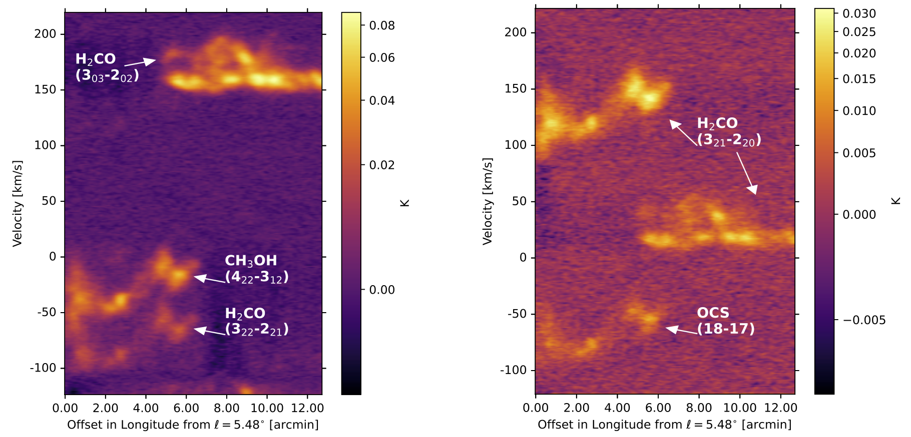
SiO is spread throughout the clouds before & after collisions
The MUBLO: Millimeter Ultra Broad-Line Object

Broad-Line: FWHM~160 km s-1

Broad-Line (broader than the CMZ, but only <2")

Weird chemistry (no SiO?!?)

Dusty

...and cold, using SO LTE model

No NIR counterpart

No counterparts!


Hypotheses & Data

We can still find chemical oddballs - we don't have categories for everything!

ALMA-IMF: CMF measurement & YSO counting
- Continuum data paper
- Survey overview (Motte+ 2022)
- Cores in W43 (Nony+ 2023)
- Shallow CMF in W43-MM2/3 (Pouteau+ 2022),
evolution (Pouteau+ 2023)
- CMF slope α ≲ 1
- 8 Hot Cores in W43 (Brouillet+ 2022) & ~60 more (Bonfand+ 2024)
- Line Data paper (Cunningham+ 2023)
- Single-dish combination (Díaz-González+ 2023)
- SiO Outflow catalog (Towner+ 2023)
- 320 SiO outflows cataloged
- Catalog paper (Louvet+ 2024)
- ~1000 cores cataloged, CMF steeper than IMF
- Gas infall kinematics (Álvarez-Gutiérrez+ 2024, Sandoval-Garrido+ 2024), Koley+ in prep
- Dust temperature / column maps with PPMAP (Dell Ova+ 2024)
- H41α estimates of free-free emission (Galván-Madrid+ 2024)
(these papers are all now submitted or accepted, but this is a screenshot that includes everyone's photos...)
ALMA-IMF Key Results summary
- Rich, science-ready data (Ginsburg+ 2022, Cunningham+ 2023)
- CMF is top-heavy in HMSFRs (Pouteau+ 2022, Louvet+ 2024)
- Core fragmentation is not 1-to-1 [WIP] (Budaiev+ (CMZ), Yoo+ (W51), Louvet+ (W43), ...)
- 10% of $M\gtrsim1\mathrm{~M}_\odot$ cores are hot cores (Brouillet+ 2022, Bonfand+ 2024, Wyrowski+)
- Outflow feedback builds over time, sets initial conditions for many cores (Nony+ 2022, Towner+ 2023)
Hot Cores: L$>10^3 L_\odot$
Hot cores are chemically rich sites of high-mass star formation.
They are only found in the more distant disk & CMZ regions
They are only found in the more distant disk & CMZ regions
Hot Cores: L$>10^3 L_\odot$
Hot cores are chemically rich sites of high-mass star formation.
They are only found in the more distant disk & CMZ regions
They are only found in the more distant disk & CMZ regions
Hot Cores: L$>10^3 L_\odot$
Hot cores are chemically rich sites of high-mass star formation.
They are only found in the more distant disk & CMZ regions
They are only found in the more distant disk & CMZ regions
Hot cores in ALMA-IMF: From rare objects to a population
Cores with line forests
TD>50 K
TG ≳100K
TD>50 K
TG ≳100K
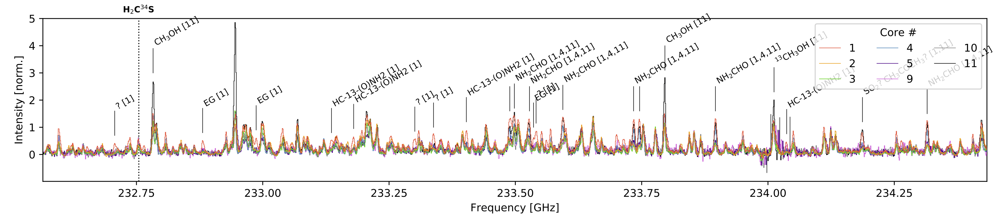
Hot core overview:
- 9 HCs in W43-MM1 (Brouillet+ 2022)
- ~60-70 HCs in ALMA-IMF sample from CH3OCHO (Bonfand+ 2024; left)
- ~10% of continuum cores are within hot cores
Hot cores in the Galactic center: Distributed MYSOs
Desmond Jeff+ 2024
Ten hot cores in Sgr B2 DS
outside the massive clusters
TG ~ 200-500 K
M ~ 200 - 2900 M⊙
(proto-O-stars / clusters)
~5% of cores are hot cores
M ~ 200 - 2900 M⊙
(proto-O-stars / clusters)
~5% of cores are hot cores
Sgr B2 DS: More massive cores than the Disk
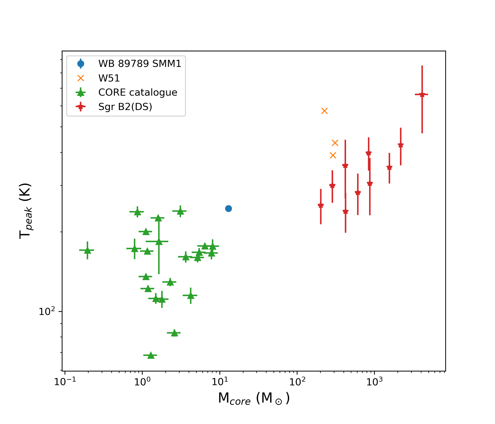
Hot Core Line Data: CH3CN, CH3CCH
Temperature measurements with per-pixel rotation diagrams
Desmond Jeff+ 2024 (CH3OH in CMZ), Wyrowski+ in prep (CH3CN in ALMA-IMF)

Shocks & Outflows
SiO traces outflows, CS v=0 J=1-0 and v=0 J=2-1 masers may trace a disk
M = 24-10+12M⊙
if the masers trace a disk
if the masers trace a disk
CS maser conditions
van der Walt+ 2020- Top: CS J=1-0, Bottom: CS J=2-1
- Red: Consistent w/W51e2e observations
- Masers do not coexist; require different specific CS column
(N2-1=1015.6, N1-01016.1 cm-2) - Require high abundance (XCS > 10-5)
- Hot (300-500 K), moderate-density (n~105 cm-3): Disk surface? Or outflow cavity wall?
W51 e2e: Too optically thick at 1mm to measure disk

SiO shows messy outflows
The outflow (& disk) around W51 North changed direction by ~50 deg
in < 100 years.
ALMA-IMF Line Data: 315 cataloged SiO Outflows
Allison Towner+ 2024
Resolved, structured SiO outflows
5-60% of SiO at low velocities:
Relic outflows?
Relic outflows?
High velocity cloud-cloud shocks happen in the ISM


{kind=link}
(these are fully molecular HVCs in the plane of the galaxy - not accreting HI clouds)
How does gas flow into the Galactic Center?
We think the ring-like feature formed in this simulation is a good model for the CMZSormani+ in prep
SiO is all over the CMZ
and prevalent throughout Galactic disk clouds.
Models suggest it should precipitate out of gas rapidly (Schilke+ 1997, Gusdorf+ 2008a, 2008b), but low-velocity shocks can keep some as gas if it's in the right part of the dust.
Models suggest it should precipitate out of gas rapidly (Schilke+ 1997, Gusdorf+ 2008a, 2008b), but low-velocity shocks can keep some as gas if it's in the right part of the dust.
SiO is always present in shocks, and sometimes just there
SMA followup detection of H2S
Summary
Molecular line emission provides a lot of tools for understanding star
formation and the ISM... but we still don't know
how all those tools work
- SiO is everywhere! It's more prevalent in shocks, usually
- N2H+ is a good tracer of dense gas, but only in limited environments
- NaCl, KCl, AlO and friends are the first unique disk tracers found
We can still find chemical oddballs - we don't have categories for everything!
- Gas-phase salt is prominent in disks around high-mass stars - which we'd never seen before
- There's an extremely broad linewidth, compact source in the Galactic Center with apparently sulfur-rich, everything-else-poor chemistry